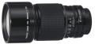

这款镜头采用仅移动后部镜片组进行对焦调整的后部对焦系统，具有平滑对焦以及对焦时总长不变的特点。此外，这款镜头通过采用独有的镜头定位将近距离的像差保持在极小的水平，从而在整个变焦范围内使用最大光圈时都能实现均衡的清晰图像画质，同时还具有同级别镜头中最近的1.5m对焦距离。
我看怎么没有评论这支头的，这支头应该是这个系列的最后一款，也就是第三款。最显著的特征就是屁股那块和镜身一样粗壮，而不是小一圈。对焦的时候也是内对焦，不会伸出来。总体感觉性价比飞跃喜马拉雅，便携和效果的绝佳平衡，尽管是长焦，但对焦很容易。
金属材质，自带金属植绒遮光罩，手感棒到爆炸。对焦容易，如丝般顺滑。成像也没得说，典型的空气切割机。
分量重？但对于这个焦段的镜头来说，恰恰分量已经恰到好处。